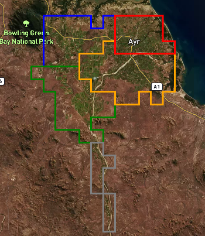
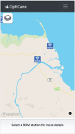

The CSSIP project aims to help farmers improve their sugarcane irrigation management.
We are:
Developing improved weather forecasts that account for variability across the Burdekin catchment;
Integrating the weather forecasts within a crop model such as IrrigWeb; and
Building software that empowers farmers to irrigate more efficiently.
The CSSIP project will develop weather forecasts with improved spatial resolution, accounting for the regional variability across the Burdekin catchment. Using historical weather data, we have identified five climate zones [image]. The project will generate different weather forecasts for each zone. These will be based upon the Bureau of Meteorology forecasts but “downscaled” to account for systematic differences between zones. Improved spatial resolution in weather forecasts means that farmers can access more accurate information, allowing for better decision making and improved farm management.

Five climate zones in the Burdekin sugarcane growing region. More details on climate zones can be found
here
Existing crop models (like IrrigWeb) consider only past rainfall when producing irrigation advice. However, it may be a good management strategy to delay irrigation if heavy rain is predicted. This strategy must be balanced against the confidence in the forecast and the risk of over- or under-irrigating. By using the software as a co-learning tool, farmers and extension officers can explore the impact of alternative future scenarios and different management interventions.
The software will also incorporate long-term forecasts. For example, the likelihood of this season being wetter or drier than average can factor into irrigation planning, especially if the total water budget is limited.
Recent weather observations for select BOM stations are presented on the Weather page via clickable map. Simply click or tap on a BOM icon for the latest available observations from BOM. Currently data are only available for select BOM weather stations. We hope to provide more local weather stations soon.

The Weather page displays BOM weather stations. Clicking on a weather station icon displays the most recent weather observations.
Forecasts provides Short (7 day) and Medium (20 day) weather forecasts developed by CSSIP. Forecasts provided include rainfall, maximum and minimum temperatures morning and evening wind speeds and direction as well as crop water use. Crop water use is provided for a full canopy sugarcane crop. Forecast data are mapped for each region. Mapped data includes the Median forecast value for Maximum and Minimum temperatures and wind speed. A lower and higher forecast rainfall are also provided with a 1-in-4 chance of rainfall being above the upper rainfall level and a 1-in-4 chance of rainfall below the lower rainfall level. The displayed forecast can be selected from the legend.[image]
The displayed forecast period (daily for short-term and weekly for medium-term forecasts) can be changed using the date arrows or date picker tool. Forward and Back arrows step through one forecast period at a time. 'Fast-Forward' and 'Rewind' buttons step directly from short to medium-term forecasts.[image]
Further details for each climate zone can be obtained by clicking on the map. This provides forecast data for the selected period as well as a plot showing the short-term rainfall forecast and recent observations for comparison. Rainfall forecasts are represent by a bar showing the upper and lower rainfall bounds. This represents a 50% chance range (1-in 4 chance of less and 1-in-4 chance of higher rainfall) [image].
My Farm provides sugarcane crop water status and irrigation advice at a block level. MyFarm is only available to registered users. Registered users are provided with irrigation and crop soil water status forecasts based on local weather forecasts. For an entry level registered user this information is provided for each climate zone, for a selected range of cropping systems. Further specifc details are provided for users who register with a personal irriweb account. Simply register with your Irrigweb email address.
My Farm provides a forecast of soil water deficit (SWD), daily crop water use (Evapotranspiration) as well as scheduled irrigation amounts. Selecting a particular block will provide further details including a time series plot of SWD. The SWD plot provides a forecast range based on forecast rainfall as well as baseline SWD value for a no rainfall scenario as well as the effects of any scheduled irrigation events. Users can use this plot as a tool to decide if scheduled irrigation events should be changed.[image]